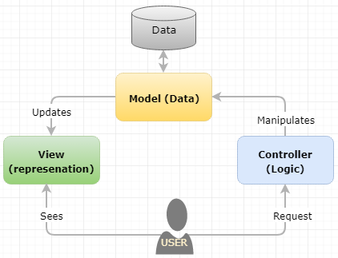

Figure 1 represents a typical layer in the light ERP software. Java machine layer or representation layer represents the attribute of the individual application. This layer can access the database directly using JDBC or call the logic (business functions) in the application logic layer. Then these business functions call various standard APIs including the instruction on how to access database and represent it in the functions using ODBC middleware. Furthermore, this architecture leaves room for the additional interface for the future extension – Applications Interface Services (AIS) server which makes use of the code written in the Application logic layer.
Figure 1. Layered Architecture
Above figure contains both interactive and batch applications where interactive applications can be modeled using an MVC framework. MVC pattern comprises the Model (data), View (presentation), and Controller (logic) relationship as depicted in figure 2. This MVC architectural pattern follows a typical layered architectural style.

Figure 2. MVC Pattern for Interactive Application
In MVC architecture pattern, a model is an instruction on how to manipulate data by calling a master business function. A view is the output of data either manipulated by the controller or returned value itself where traditional software represents data using a business view. And a controller defines the interface including how to call the model functions.